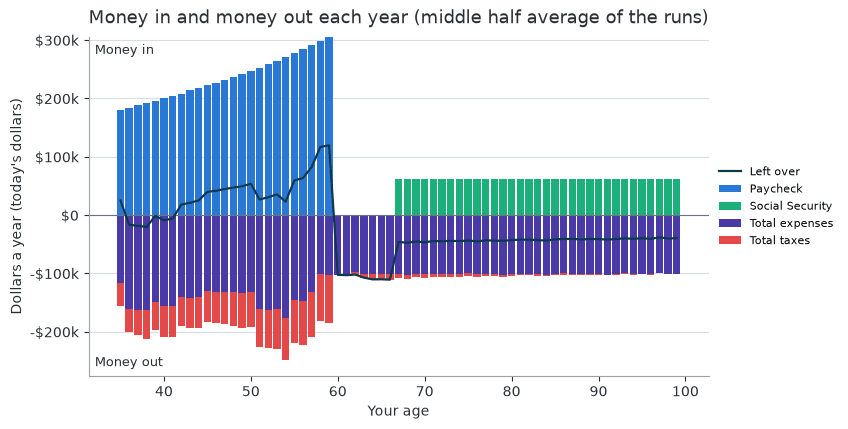
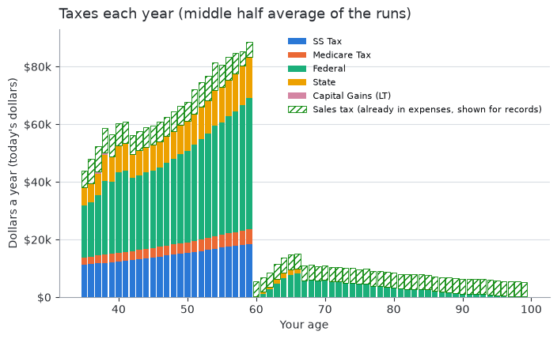
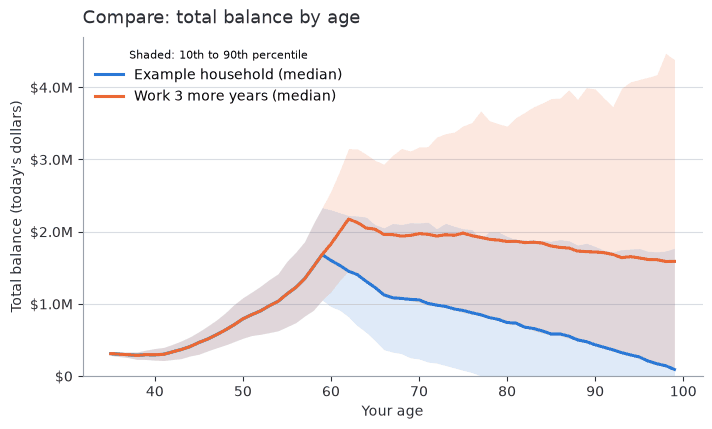

Model rules by group
Purpose: for readers who want the rules behind each screen, what the model does with each group’s inputs and its defaults.
The app describes the screens. Defaults are those of the shipped example household. The strategy rules are in Strategies and the law gaps are in Tax law in the model.

Inputs: one chip per group below.
Inflation and dollars
Money is in today’s dollars by default, so a far-future figure buys what the
same figure buys now. A figure marked (%) is a percent: type 3 for 3%.
Inflation range (Setup, Advanced settings): low, most likely and high, drawn as a triangular range each year. The defaults are 1%, 3% and 6%.
Inflation-adjusted dollars on (off by default): expenses, Social Security and the law’s indexed figures grow with each year’s drawn inflation, and balances are inflation adjusted.
Off: returns and pay are deflated by the mean of the range, as (1 + return) / (1 + inflation) - 1. For 1%, 3% and 6% the mean is 3.33%, not the 3% most likely value.
Both ways tell the same story. A plan that fails at the mean fails in both.
Household
Setup’s Household, Run and Inflation cards apply to the whole run.
Defaults: a partner, filing JOINT, living in NJ, a 65-year run, today’s dollars.
Saved scenarios change only by your edits, a merge or Make B match A on Compare.
Inflation adjusted: the figures the law does not index (state brackets, the Social Security taxability thresholds, Medicare Part B, the SALT floor, the mortgage limit) are assumed to keep up with inflation too.
Seed: two scenarios on the same draws differ because of their settings, not luck.
Deductions: each year the model takes the larger of the standard and itemized deductions (see Summary). The state starts from income before federal deductions. State treatment of each strategy is in How the home state treats the strategies.
Accounts
Every account, the withdrawal order, each account’s return, cost basis and IRA basis, and where leftover cash goes.
Defaults (fictional round figures): Savings 25,000, Investments 50,000, Traditional 401k 100,000, Roth 401k 100,000 and CD & Bonds 0. Withdrawals are PRIORITY. The surplus split is 33%, 33%, 0%, 0% and 34%.
Owners: a Traditional account’s RMD and an IRA’s QCD follow its owner’s age. A Roth conversion lands in a Roth account of the same owner. Each person’s Traditional deposit and employer match go to their own Traditional account, else the first one.
Filing separately: an account’s interest, gains and taxed withdrawals go on its owner’s return. A JOINT account’s are split 50/50.
Investments: only the gain (the balance above cost basis) is taxed, as long-term capital gains.
Returns are drawn each year from the mean and standard deviation. How withdrawal order affects tax is in Strategies you can compare today.
HSA and dependent care FSA are set on Benefits. They show read-only under Benefit accounts, pay only their own costs and take no part in the withdrawal order or surplus.
Income
Pay, raises and past earnings for you and your partner. Ages are on Setup. Social Security is on Retirement.
Default |
Value |
|---|---|
Ages and salaries |
You and your partner are 35, earning 100,000 and 80,000 until age 60. |
Raise |
3.3% mean, 0.3% standard deviation, plus a 25% yearly chance of a 10% promotion raise. |
Earnings history |
Manual entry, empty. |
Retired |
Off. |
Each year’s raise is the mean plus the standard deviation times a normal draw. The pay factor is 1 plus the raise plus any promotion, never below zero.
A Last salary history is computed from the last salary and the raise inputs, so changing a raise refills it. Only years you type over it are stored.
Earlier pay is backtracked from age 22, a fixed assumption, not an SSA rule.
A retired person’s pay stops at today’s age, whatever Salary stops at age holds. This covers the paycheck, commute, employer match, dependent care FSA and the Social Security estimate.
Children
One card per child, with daycare and college costs, and how much each child raises ordinary recurring expenses. The dependent care FSA is on Benefits.
Defaults: two children, born when you are 33 and 36, in their child years up to age 20, with a child inflation factor of 20% each. College runs from 18 for 4 years and daycare from 0 to 5, both at no cost until you set one.
Child years follow your age. With n children in their child years, ordinary recurring expenses are multiplied by 1 + n times the factor. n is also the number of dependents the state exemption uses.
College is charged as Major Spending from your age at birth plus the start age, for the college years, grown by inflation. A child already in college pays only the years left. It is not added to expenses twice (the College Costs column shows that part).
Paying for college: a linked 529 pays first, up to its balance. Other 529 balances pay the rest by the withdrawal strategy, then the usual accounts.
Daycare is charged the same way, from the start age through the end age. It is not an Expenses row. It counts as dependent care, in the Tagged Dependent Care column that caps the dependent care FSA.
Home
The ownership timeline: homes owned or bought later, rent periods, utilities and which home is your primary residence.

Adding a home or car on the timeline.
Default |
Value |
|---|---|
Home |
One primary residence named Home, value 0, appreciation equal to the mean inflation (3.33%), no mortgage, property tax 6,000. |
Rent and utilities |
None. The example’s housing payment is a Bills row on Expenses. |
Home bought on the timeline |
Primary residence, 20% down, 3% closing costs, no transfer tax, 6% selling costs, no penalty. |
Costs and value
Property tax is charged each year as Property (inflation adjusted) and counts as state and local taxes under one SALT cap. Insurance is charged in Bills.
Value is the value today times (1 + appreciation) per year. With inflation-adjusted dollars off, the mean inflation comes off first: growth is (1 + appreciation) / (1 + mean inflation) - 1. With them on, it grows at the appreciation itself. A home bought later starts at its price in that year’s prices.
Net worth counts the home value less the loans owed (Home Value column).
Loans: with the switch on and a balance above 0, the mortgage is a Mortgage loan named after the home (see Loans). A home can also hold second mortgages and home equity loans or lines, charged after the mortgages. A line is entered as the amount drawn; the draw period and cash out are not modeled.
Rent: each period’s monthly rent times 12 is charged in Bills, inflation adjusted, not raised by the child factor. A year with no home and no rent charges no housing.
One lane: primary residences and rent periods are one lane. Overlap other than in a move year is refused.
Moving: a later primary home or rent period with a State moves you there (see Moving states).
Buying and selling
Timing: a home is bought at the start of the year you are its purchase age and sold at the end of the year you are its sale age (at its start when the next primary home or rent period starts that year).
Purchase year: the down payment (the whole price with no mortgage), closing costs, transfer tax and fees are paid in cash as Asset Purchases. The rest is a Mortgage loan.
Sale: value is 0 from the sale year. Property tax and insurance stop the year after. The price is the one entered, or with 0 the home’s value that year. Selling costs, the mortgage and other loans with the prepayment penalty come out of the price. The rest is Asset Sale Proceeds, deposited by the surplus rule. A mortgage above the price is paid from the accounts in Loan Payoffs.
Gain is the price less selling costs less cost basis. Basis is the one entered, or today’s value for a home owned now (only growth from now is a gain), or for a later purchase its price with transfer tax and fees (closing costs stay out).
Exclusion: a primary residence’s gain is excluded up to the section 121 limit (250,000 single, 500,000 joint, 250,000 per separate return, unconfirmed), assuming you lived in it 2 of the last 5 years. A primary bought during the run and sold under 2 years later gets none.
Taxed: the rest, and any other home’s whole gain, is a long-term capital gain (Home Sale Gain, with the exclusion in Home Sale Exclusion). A loss is not deducted.
State of the gain: the state the home sits in. If that is not the state lived in, the gain is taxed alone by that state, with no credit from the state lived in.
Still owned at the end: not sold in the run. Only What beneficiaries keep and Compare’s after-tax columns treat it as sold on the last day. Beneficiaries pay selling costs but no gains tax (stepped-up basis). See Terminal tax rate.
Mortgage interest deduction
It counts the primary residence and the one other home with the most mortgage interest, plus any Mortgage loan left on Loans, under one principal limit from the law data (half for each separate return).
Home equity debt counts only when the money bought, built or improved the home (Used on this home). Otherwise it deducts nothing and its balance stays out of the limit.
A third home’s interest is not deducted. Pre-2018 debt limits, mortgage insurance premiums, depreciation recapture, the net investment income tax and rental income are not modeled.
Cars
Each car’s value, depreciation, loan or lease, commute, running costs, replacement cycle and when it is bought, sold or leased, in today’s dollars, plus the fuel price.
Default |
Value |
|---|---|
Cars and fuel |
No cars. Fuel price 3.50. |
A new car |
Driven by you, loses 20% of its price in year one then 10% of its value a year, 25 miles per gallon, Loan and Commute switches off (7% rate, 60 months and 230 commute days once on), owned (lease payment 0), no replacement (first in 5 years once a cycle and price are set). |
A car bought on the timeline |
10% down, no sales tax, fees, selling costs or prepayment penalty. |
The example keeps its Car, Car Insurance, Car Maintenance and Gas/Tolls rows on Expenses.
Value
A car owned today is set by its Purchase price (as paid) and Year bought. Value today is the price times (1 - first-year drop) times (1 - depreciation) per later year. A car bought this year or later is at its price.
Depreciation first year blank uses the usual 20% (unconfirmed).
A Value today you enter wins. Blank or 0 uses the estimate. With neither a value nor a year bought, the car has no value.
A later car and each replacement starts at its price and drops in the year after purchase. Value is inflation adjusted like the home, shown as Car Value and counted in net worth.
Running costs
Fuel per year is (2 times commute miles one way times commute days while the driver works, plus miles per year) divided by miles per gallon, times the fuel price. Tolls and parking are charged per commute day while the driver works.
The commute stops when the driver’s salary stops. Miles, insurance, registration, maintenance and the loan run on.
All costs grow with inflation and sit in Car Costs (parts Car Fuel, Car Tolls, Car Upkeep, Car Replacement, Car Lease). No car cost is tax deductible. Removing the partner makes a PARTNER car yours.
A financed car’s loan is an Auto loan run like a Loans loan: payments in Loan Payments, balance subtracted from net worth.
Replacement
Replace by picks the rule: Years (Replace every, first after First replacement in), Miles (Replace every (miles)) or Both (whichever comes first, each replacement restarting both). The rule not selected is ignored. A selected rule at 0 never replaces.
Miles are commute plus other miles per year since the last purchase, starting from Miles on it today. At 12,000 a year and a 36,000 rule, the car is replaced at the start of year 3.
The price is the replacement price, or with 0 the purchase price (as paid, not grown to today’s dollars). With neither, no replacement.
Replacement paid by blank uses the car’s How it is paid. The old car is traded in at its value.
Paid by |
What happens at each replacement |
|---|---|
Cash |
The rest of the price, sales tax and fees, and selling costs on the trade-in are paid in Car Replacement. The car’s loan runs on. |
Finance |
The down payment less the trade-in (at least 0), with the same tax, fees and costs, is paid in Car Replacement. The old loan is paid off at the close of the year before, with its penalty, in Loan Payoffs. The price less the larger of the down payment and the trade-in is a new Auto loan (“Sedan loan 2” and so on) at the replacement loan rate, term and down payment (blank: the car’s own). |
Lease |
The old loan is paid off and the car is sold (Asset Sale Proceeds less selling costs). Then 12 lease payments a year go in Car Lease, with the lease’s down payment and fees in Car Replacement at each start. Each lease runs its term rounded up to whole years. |
Either way the value restarts from the price. Example: a lease car replaced every 36,000 miles at 12,000 a year is turned in at the start of year 3, and a 24-month lease starts again in years 5, 7 and so on.
Buying and selling
Timing is the same as for homes: bought at the start of the purchase-age year, sold at the end of the sale-age year (at the start when the next car of its lane starts that year, so only the new car is charged).
Purchase year: the down payment (the whole price with no loan), sales tax and fees are paid in cash as Asset Purchases from the accounts in the withdrawal order. A large purchase can raise tax on Traditional withdrawals or show as Shortfall (unpaid). With Finance the rest is an Auto loan.
Sale: value is 0 from the sale year and costs stop the next year. The price is the one entered, or with 0 the car’s value that year. Selling costs and the loan still owed, with its penalty, come out of the price. The rest is Asset Sale Proceeds. A loan above the price is paid from the accounts. A car sale is not taxed, gain or loss.
Example: a 30,000 car with 10% down, 6% sales tax and 500 of fees takes 3,000 + 1,800 + 500 in cash that year and borrows 27,000.
Leases
A lease’s purchase and sale years are its first and last years. Car Lease charges 12 payments a year (inflation adjusted). Fuel, insurance, registration and maintenance are charged as for an owned car.
A leased car has no value, loan, replacement, purchase cash or sale proceeds. A payment due at signing, a residual or a buyout is not modeled.
Loans
Loans other than mortgages and car loans, with extra payments, a refinance, forgiveness, a later start or an early payoff.
Defaults: none. A new loan starts now and runs to its last payment, with no early payoff or penalty.
Charged as expenses out of cash flow. Balances are subtracted from net worth.
Mortgage interest deduction comes only from loans secured by a home (each home’s loans on Home, and a Mortgage loan saved here before homes held their loans). Auto, Student and Other loans never count.
Payment in Expenses: tick it when the payment is already an Expenses row (such as a Mortgage row in Bills). The loan then is not charged or taken from net worth and only feeds the deduction. Otherwise the payment is charged twice.
Starts later: a loan owes nothing before its start year, and its balance is the amount borrowed then. No cash arrives with it, so a loan that pays for a car or home belongs on that car or home.
Pay off early: payments run through the end of the year you are the payoff age. The balance then owed is paid in one sum from the accounts, plus the prepayment penalty, in Loan Payoffs. The penalty is not deductible. A loan whose payment is an Expenses row cannot be paid off early, nor can a forgiven one.
Benefits
The Benefits group holds the retirement plan, the medical plan with its HSA, the dependent care FSA and the beneficiaries.
Retirement plan
How the household saves into 401k and IRA accounts each year, and each person’s employer match.
Defaults: off for a new household. The match is on for a person with an active salary, with a rate and cap of 0. A new partner copies you. The example has a Traditional deposit of 10% of pay, no Roth deposit and both matches on at 0.
Where it goes: each person’s Traditional deposit and match go to the first Traditional account they own (a 401k before an IRA), else the first Traditional account. The Roth deposit goes to the first Roth account. The employer matches each person’s 401k deposits.
Limits come from the law data. Each slider runs from 0 to what the limits leave at the current ages:
A person’s Traditional and Roth 401k share the 401k limit. Their Traditional and Roth IRAs share the IRA limit, each with its catch-up.
401k deposits plus match stay within the total-additions limit. IRAs and catch-up are outside it.
Every deposit stays within the person’s own pay, so a partner with no pay has no room. A spousal IRA is not modeled.
Raising one slider lowers the most the others sharing its limit can take. An account with no room says why.
Tax: a Traditional IRA deposit is treated as deductible. The Roth IRA income limit cuts a Roth IRA deposit each year, and a note appears when your income is in that range.
Traditional versus Roth is covered in Strategies you can compare today.
Medical plan
What the health plan costs and how it shares the cost of care. Visits, drugs or a flat amount are on Healthcare. Medicare and IRMAA are under Medicare.
Defaults: off. Premium zero. Per person, a 1,500 deductible, 20% coinsurance and a 6,000 out-of-pocket maximum. These are placeholders, not sourced.
Premium before the Medicare age is spending in today’s value and grows 1.5% a year above general inflation, like every healthcare cost (a fixed figure, not an input).
Pre-tax premium lowers taxable pay. It is held to each return’s wages less its Traditional deposits, dependent care FSA and payroll HSA. The rest is paid after tax and itemized. The Pre-tax Premium column is the part pay covered.
After-tax premium can be itemized above the medical floor. After-tax premiums and healthcare costs, less everything the HSA paid, count toward the medical deduction on their own. Tag only other medical costs on Expenses.
No plan: visits before the Medicare age are paid at full price.
HSA
A health savings account: pre-tax money that pays qualified healthcare costs and rolls over. It sits inside the medical plan and counts only while that plan is on.
Defaults: off. When on: What the year’s costs need, no cap of its own (blank: the legal limit), through payroll, no employer contribution, balance 0, 5% mean return with 6% standard deviation, owned by you.
Account: shown read-only on Accounts, starts at its balance (today’s dollars) and grows at its own drawn return. It is never part of the withdrawal order, surplus, Roth conversions or RMDs.
Each year |
Rule |
|---|---|
Contributions |
Only people under the Medicare age contribute. The limit is the family limit while the partner is under the Medicare age or a child is in its child years, else self-only, plus a catch-up for each contributor aged 55 or older. The employer’s part (today’s dollars, grown by inflation) is paid only in a year someone has pay and counts toward the limit. Your part is the year’s qualified costs less the employer’s part (What the year’s costs need) or the limit less the employer’s part (The most allowed), held to the limit and the cap. Contributions stop once nobody is under the Medicare age. The balance still pays. |
Qualified costs |
Out-of-pocket healthcare, rows tagged Medical on Expenses, and from the Medicare age the Part B and Part D premiums and IRMAA. Not the health premium before the Medicare age or a Medigap premium. The HSA pays them first, up to this year’s contributions and its balance. |
Taxes |
Through payroll, your part leaves pay before income, Social Security and Medicare tax. Otherwise it is paid from other cash and deducted from income. The employer’s part is never taxed. Qualified withdrawals are untaxed, and nothing the HSA paid counts toward the medical deduction. California and New Jersey add contributions, the employer’s included, back to the income they tax. |
Cash |
Your contribution is HSA Deposit. What the HSA pays is HSA Withdrawals (Medical). HSA Employer Deposit is informational. |
Warning: the pane warns when the plan’s deductible is below the law’s high-deductible minimum (the example’s 1,500 is under the 2026 minimum of 1,700). The model still counts the HSA.
One HSA serves the household. The second person’s catch-up is still counted in the limit.
Older scenarios: an HSA row on Accounts folds into this HSA (balances added, first row’s return and owner kept) with a warning. Results change.
Dependent care FSA
Pre-tax pay set aside for child care, an employer benefit, kept as an account that starts each year empty.
Defaults: off, with no cap of its own (blank: the federal limit).
Amount each year is the smallest of its cap (today’s dollars, grown by inflation), the year’s dependent care (daycare plus rows tagged Dependent care, the Tagged Dependent Care column) and the federal limit. Only years with a child under 13 in its child years count.
Limit: split between the returns by pay. Each return is held to 7,500 (3,750 filing separately, not grown by inflation, unconfirmed) and, with a partner, to the lower of your two pays.
Tax: it lowers the pay that income, Social Security and Medicare tax are charged on, so MAGI and those taxes fall. Gross Income and Paycheck stay. Every state follows the federal treatment.
Account: read-only on Accounts with no return, outside the withdrawal order and surplus. It receives the pay set aside (Dependent Care FSA) and pays that much of the care (FSA Withdrawals (Dependent Care)), so it ends each year at 0. Nothing is forfeited. It moves no cash, since the care is already charged, so the gain is the tax saved.
Not modeled: the dependent care credit (Form 2441), a student or disabled spouse, the grace period. The Roth IRA income limit and Social Security earnings record use pay before the FSA.
Beneficiaries
Who inherits what is left and how they take it. They set how the after-tax final value is measured (the tax they pay on inherited Traditional money). They do not change the plan.
Defaults: one beneficiary with the whole estate, no other income, filing single, in the state you live in at the end, taking the money over 10 years. No terminal tax rate.
Fields: name, share of the estate (shares total 100%), other yearly income (today’s dollars), filing status, income tax state and payout (over 10 years or all at once).
State: Same as household is the state you live in at the end. For a child’s beneficiary it is the state you live in during the child’s last child year.
Tax: each is taxed on their own share of the Traditional money with their own terms, and the taxes are summed. The inheritance tax is charged on each share.
Details and a worked example: Terminal tax rate.
Healthcare
What healthcare costs, which always count in the expenses: one flat yearly amount or range (Flat amount, the default), or doctor visits and drugs (Visit-based). The health premium, HSA and plan cost sharing are on Benefits. Drugs are an expense here, not part of the plan.
Defaults: Flat amount, 0 at both ends. Visit-based: 1, 4 and 10 visits a person a year, 150, 300 and 1,500 a visit, and 60 a month in drugs. All are placeholders, not sourced.
Visit-based: each person pays the visits and drugs every year, through the health plan’s cost sharing before the Medicare age and Medicare’s from it (see Medicare). Costs are in today’s dollars and grow 1.5% a year above general inflation.
Flat amount: one level each year. A range is drawn once per run, evenly between the ends, and kept for every year, so the Monte Carlo runs show the uncertainty. The single run is one seeded draw, not the midpoint. It grows like the visit costs, ignores the Medicare age and the supplement’s cost share (the supplement premium is still charged), and is part of the Healthcare column. So it is a qualified HSA cost and a medical expense.
Expenses
The household’s expenses that no other group enters, plus the random major expense. The inflation range is on Setup.
Defaults: a random major expense of 0, 5,000 and 50,000. The example’s rows (generic names, round amounts) are examples to replace. A new scenario also holds the suggested monthly rows, each at 0 with a price type (grocery, goods, services or none) that matters only after a move. A saved profile is never given the suggested rows.
Charity rows are charged as Charitable Giving, count toward the charity deductions and are what a QCD pays (see Strategies). The child inflation factor never raises them.
From and To ages follow your age.
Deduction tags: a tagged row is still charged as spending. The tag adds that year’s charge (monthly rows times 12, raised by the child factor in the child years, only between the From and To ages, inflation adjusted) to the deduction. It then follows the law for its category, in years the return itemizes.
Tag |
Rule |
|---|---|
Medical and dental |
Counts only above 7.5% of AGI. Premiums, Medicare, the supplement, IRMAA and healthcare costs (less HSA payments) on Benefits and Healthcare already count. Tag only other costs (dental, vision, hearing, costs outside the plan). |
State and local taxes |
Within the SALT cap together with state income tax and each home’s property tax, which already count. Do not tag a row that repeats them. The cap is 40,400 in 2026, grows 1% a year through 2029, then reverts to 10,000 (5,000 separate), with no phase-down. |
Mortgage interest |
Counts in full. The principal limit scales only the Mortgage loans on Home. Tag only the interest part, never a Mortgage loan’s payment row. |
Charity |
Within 60% of AGI less the 0.5% floor, and toward the non-itemizer charity deduction. A QCD can pay it. |
Filing separately: each return takes half of a tagged row, as with other shared items.
Retirement
Social Security for each person (under You and Partner), then Medicare, the Medicare supplement and Spending in retirement. The earnings history is on Income.
Medicare
What replaces the health plan from the Medicare age: the Medicare type, Part B, the Part D plan and Medicare’s cost sharing. The income-related surcharge (IRMAA) applies whenever a Medicare premium is charged and has no input.
Defaults: Medicare at 65 on Original Medicare. Part B and Part D premiums off or zero, so no IRMAA. 20% coinsurance, no out-of-pocket maximum.
Premiums are in today’s dollars and grow 1.5% a year above general inflation. They are always after tax.
Visit costs (visit-based healthcare): at or past the Medicare age a person pays the Part B deductible, then the coinsurance (to the plan’s out-of-pocket maximum on Medicare Advantage, or through the supplement on Original Medicare). Drugs run up to the Part D yearly cap. The health plan’s cost sharing no longer applies.
Medical deduction: with IRMAA, after-tax premiums and healthcare costs, less everything the HSA paid, count on their own.
IRMAA looks at AGI two years earlier, so a conversion or large withdrawal raises the premium two years later (see Medicare IRMAA and the two-year lookback). A warning shows when the first two years’ tier is estimated.
Medicare supplement
A Medigap-style supplement for each person at or past the Medicare age, on Original Medicare only. It pays part of Medicare’s cost sharing, not drugs.
Defaults: off. When on it starts Plan G style: the Part B deductible, then 0% (it pays the rest), no maximum, and a premium of 0 to fill in.
Order: Medicare pays first. What it leaves each visit runs through the supplement’s deductible, share and maximum. The person pays only that. Drugs still stop at the Part D cap.
Premium is paid by each person at or past the Medicare age, grows like other Medicare premiums, is part of Health Premium, is after tax and counts toward itemized medical expenses. What the supplement pays lowers Healthcare and the itemized medical amount.
Informational columns: Supplement Premium, Supplement Paid and Health Premium State Change. They sit outside the outflows. After a move the health, supplement and Part D premiums follow the new state (see Moving at retirement).
Spending in retirement
Spending that falls or rises once you retire: each row of Expenses changes by a percent from a start age.
Defaults: off, Equal change at 0%, starting at your Social Security claim age (the age you stop working with no benefit entered). Each percent runs from -100% (the row stops) to +100% (the row doubles).
Rule: from the start age, a row’s today’s-value amount is multiplied by 1 + its percent, in one step. The clock is your age, also with a partner. From and To ages, inflation, the child factor and tax tags still apply on top. A changed Charity row changes Charitable Giving, the deduction and the QCD. An education row’s 529 withdrawal follows its changed amount.
Off or all 0%: the run is exactly the run without it.
Strategies
Three strategies and Relocation, each in its own section. Each is off by default, and its settings show only while its switch is on. The rules and law each models are in Strategies. To compare one, save a scenario with it on and one off and pick both on Compare. Beneficiaries and the terminal tax rate are on Benefits.
Defaults: all off. A conversion window of ages 60 to 74 when switched on. No move to another state.
Strategy |
Rule in the model |
|---|---|
Roth conversion |
Each year in the window it moves Traditional money to a Roth account of the same owner and pays the tax now, up to the amount and under every ceiling you set (the lowest wins). Required distributions and the year’s withdrawals come first and are never converted. See Roth conversions. The IRMAA ceiling looks two years ahead (Medicare IRMAA and the two-year lookback). |
Roth backdoor |
Deposits after-tax cash in a Traditional IRA and converts it to the Roth IRA, only from cash the year leaves, never from a withdrawal. Pre-tax IRA money makes each conversion partly taxable (pro-rata), and a warning says so. See Roth backdoor. |
QCD |
From the IRA owner’s age 70.5 it pays the Charity rows from that person’s Traditional IRAs, untaxed and counting toward their RMD. The gift is still charged in full, but the part paid this way is not a deductible cash gift. See Qualified charitable distributions (QCD). |
Relocation |
A move of both of you to another state at the start of the year you are the move age (blank: the age your pay stops, or now when retired), lived in for whole years. See Relocation: moving to another state. |
Comparison: strategies are judged after tax. Traditional money left at the end is taxed at each beneficiary’s brackets, or at the flat terminal tax rate if you set one (see Terminal tax rate).
Beneficiaries set only how the after-tax value is measured. The state you live in at the end decides the state estate and inheritance taxes.
Strategy warnings say what the model leaves out for the settings chosen. Optimize searches these settings.
Moving states. The state you live in each year is derived, never stored.
Year 0 is the home state. A primary residence bought later or a rent period starting later with a State moves you there from its first year. One with no state keeps the state lived in before it. A year with no primary residence and no rent keeps the last state.
A home or rent period held in year 0 never changes the home state, and a second home never moves you.
The Relocation move is one more change in its year. Changes apply in year order, and a primary residence or rent period starting in the move year wins.
In a year lived in another state, that state replaces the home state. Your entered amounts change only by how that state’s figures compare with the home state’s (a ratio, 1 when the home state’s figure is 0). Several moves need no chaining, and a year back home costs as entered.
With no move every factor is 1, so results are unchanged. The user view with examples is Moving at retirement.
What changes |
How |
|---|---|
Income tax |
The new state’s income tax and average local income tax apply. |
Homes |
Relocation moves housing through the primary residence lane. Saved homes never change (see below). |
Cars and gas |
Insurance scales by the car insurance ratio. Registration adds the car tax difference and gas adds the pump price change (new less old, at least 0). Maintenance is unchanged. A car bought or replaced from the move year pays its sales tax rate plus the change in the vehicle rate (at least 0). |
Rent |
Charged as entered. The Relocation rent period in the new state carries the housing cost index ratio. |
Prices |
Each Bills, Planned Spending and Other Spending row is multiplied by the ratio of its price type: grocery, goods, services, or none (1). A row added by hand uses 0.4 goods plus 0.6 services. Major Spending and Charity rows are not re-priced. The change is part of State Cost Change. |
Sales tax |
Taxable rows not re-priced above (priced none, Major Spending, random major spending) cost (1 + new rate) / (1 + old rate) times as much. Charity, college, daycare and the Home, Cars and Healthcare tabs take none. Each dollar changes once, since price levels already hold sales tax. |
Homes on a Relocation. Saved homes never change; the run uses an adjusted copy. The lane item covering the move year m decides:
A primary home or rent period of yours starting in m is the move itself. A blank state on it becomes the relocation state. Another state wins, with a strategy warning.
A primary home O: with Home follows me on, O is sold at the close of m - 1 (its mortgage paid from the proceeds, its gain taxed by the state it sits in). Off, O becomes a second home with no section 121 exclusion. Either way a new primary home “O (S)” in state S is bought at the start of m.
The new home costs O’s expected value in m times the typical-home-value ratio, with property tax and insurance scaled by their state ratios. It keeps O’s appreciation and cost rates and its mortgage terms (on) or a new loan with the Home defaults (off; no mortgage on O means all cash).
A rent period O ends at m - 1. A rent period “O (S)” starts in m at O’s rent times the housing cost index ratio.
No item in m: only the state moves.
A move in year 0 cannot sell a home owned now, so that home or rent is re-based in place by the ratios.
Homes you entered later, and second homes, keep their entered values.
Sales tax. Entered expenses already include the sales tax of the state lived in, so the model never adds it.
Each row has a class: general, grocery, clothing or none. It comes from the row’s own taxable setting, else the suggested row of the same name, else general. Each state has a rate per class.
Sales Tax (records) shows the tax inside the taxable rows each year, as amount x r / (1 + r). It is in no tax, outflow or total. The Taxes chart draws it hatched, the taxes CSV adds it as the last column, and Compare shows its median outside every after-tax figure.
Headline figures

Outputs Summary after the Monte Carlo runs.
Chance of running out is the share of runs that end with a balance under $1.
Figures are in the run’s dollars: inflation adjusted when that switch is on, today’s dollars when off.
If an input is not valid, a message naming the field replaces the figures.
Summary and deductions
Each run draws inflation, raises, promotions, returns, random major expenses and (with visit-based healthcare) doctor visits, or a flat healthcare level, afresh from your ranges. The seed makes the set repeatable. The first run is the single run behind the headline figures.
Each year the model takes the larger of the standard and itemized deductions. Separate returns must both itemize if either does.
Itemized parts: mortgage interest (Mortgage loans and rows tagged Mortgage interest), state and property tax and rows tagged State and local taxes within the SALT cap, medical costs above the floor, and charity.
The senior deduction and the non-itemizer charity deduction are in Strategies you can compare today.
Inputs: Expenses (deduction rows, Charity, property taxes), Loans, Benefits (premiums), Healthcare and Retirement (Medicare).
Charts
The Plots charts are the middle half average of the runs year by year, apart from the total balance band and the histogram.
Balances
The median and percentile bands of the total balance are taken across runs at each age. Account balances and cash flow are the middle half average, so a stacked area adds up to that average total.


Money in and money out each year, with the left over line; the middle half average of the runs.
Deposits and withdrawals
Each account’s RMD uses its owner’s age and birth year (no owner means yours). The joint-life table for a spouse 10 or more years younger is not modeled: the Uniform Lifetime Table is always used.
A person’s QCD counts toward that person’s Traditional IRA RMDs together, never the other person’s. A 401k’s RMD is its own (see Required minimum distributions).
The tax on Traditional withdrawals is federal, state and capital gains tax with the year’s taxed Traditional withdrawals less the same tax without them. It includes knock-ons such as more taxable Social Security, but not conversion tax or IRMAA. The Final report’s yearly table shows it as Tax on Traditional Withdrawals.
Amounts are in the run’s dollars.
Taxes


Taxes by kind and year. The hatched bar is sales tax already inside spending.
The kinds are SS Tax, Medicare Tax, Federal, State and Capital Gains (LT), from the law data for your home state and filing status. A setting such as the claim age shows up here year by year.
State rules
Each state treats Social Security as exempt (none taxed), federal (the part the federal return taxes) or threshold (none at or below a federal AGI limit, above it the federally taxed part up to a share of benefits), with an optional deduction. A rule that fits none is approximated and flagged unconfirmed.
A state may leave a share of long-term capital gains out, give exemptions as non-refundable credits and carry an average local income tax, counted as state tax.
The local tax base is all income or wages only (never interest, gains or retirement income). Wage-based local tax is charged even in a year with no state taxable income.
Local Tax is the local part of the State column. The Taxes plot and the Final report’s table show it as its own kind, so Total is unchanged. It counts in itemized state and local taxes.
State Deduction, State Exemptions and State Credits are informational and never added to a tax or total.
Why law figures jump
Some figures are not indexed by law: the Social Security taxability thresholds, state brackets and exemptions, the SALT floor from 2030, the mortgage limit, the home sale exclusion, the Additional Medicare thresholds, the dependent care FSA limit, the HSA catch-up and a few more (the law data lists them).
The model holds each at its last dollar amount, so taxes creep up. After a random 3 to 7 years it restores it to its inflation-adjusted level, and the steps repeat.
Congress and each state follow separate random schedules drawn from the seed, so federal and state taxes step in different years. The first year is never affected.
Statute paths stay as written (SALT cap 2026 to 2029, senior deduction 2025 to 2028, top IRMAA threshold). There is no setting.
Expense chart
It averages the middle half of the runs. The child inflation factor, loan payments (unless Payment in Expenses is ticked) and healthcare costs appear where charged, and the random major expense shows as its average over those runs.
How Compare judges


Two scenarios on the same random draws.
Two scenarios run on the same draws, so the difference comes from the settings. The table judges each after tax, in today’s dollars:
Column |
Meaning |
|---|---|
Homes and cars |
Median homes and cars less loans. |
After-tax final value |
Median of what the beneficiaries keep. |
Paired gain |
Median gain over the first scenario, run by run on the same draws. |
Share ahead |
Share of runs ahead of the first scenario. |
Lifetime taxes and IRMAA |
Median lifetime taxes and IRMAA. |
Sales tax (for records) |
Median lifetime sales tax inside the spending, outside every after-tax figure. |
Break-even rate r* |
A scenario that leaves less in Traditional accounts beats the first after tax when the rate on that money is above r*. One that leaves more beats it when the rate is below r*. The last column says which side applies. r* counts estate and inheritance taxes and the homes’ selling costs. |
After-tax value: when the first scenario has a terminal tax rate, Traditional money left is charged that one rate for every row. Otherwise each row taxes its own beneficiaries’ payouts at their brackets (see Terminal tax rate). Unrealized Investments and home gains are untaxed (stepped-up basis). Estate and inheritance taxes are charged.
Claim ages: when scenarios differ in claim age, taxable Social Security counts withdrawals and gains, so the tax on the same withdrawals can change. The Taxes chart shows it. The claim-age limits are under Social Security.
Roth IRA: the deposit shrinks as income passes the phase-out range in the law data. The Roth 401k has no income limit. Income is pay plus interest less Traditional deposits. Social Security and withdrawals are not counted.
How Optimize scores
Optimize looks for the best strategy settings: the Roth conversion (ceiling and window), the Roth backdoor, QCDs, the withdrawal order, where surplus cash goes and the Social Security claim ages. It scores each try on the same draws (the Seed on Setup, not the Runs) and changes nothing until you apply the result.
Score: a weighted average of the runs’ after-tax final worth (the middle run counts most, the tails less), plus a bonus for the share of runs that never run short, less a penalty on the spread between a bad-luck run (10th percentile) and a good-luck run (90th).
Search: one strategy at a time, keeping a new setting only when it is clearly better, with fewer runs for settings that fall behind early.
Details: Finding the best settings.
Social Security
Each person’s benefit basis, benefit table and claim age.
Basis: Earnings history pays the estimate from earnings at every age from 62 to 70. Manual entry pays from the benefit table, one row per claim age from 62 to 70. Enter the monthly benefit your statement shows (today’s value, already adjusted for early or late claiming). A blank amount is estimated.
Defaults: claim age 67, entered benefits at 62, 65, 67 and 70 for each person, Manual entry.
Estimated rows are straight lines through the entered ages: between two entered ages the line between them; outside them, the line through the two nearest, never below zero. One entered age is used at every claim age. They are marked estimated, never saved, and refill when you change an entered amount. The model never scales the benefit.
Compare claim ages by saving a scenario per age and picking the two on Compare.
Earnings estimate (SSA’s simplified method, in today’s dollars):
Each past year’s earnings are indexed to the newest year of the national average wage index and capped at this year’s wage base.
Today’s salary is held level from this year until pay stops or the claim age.
The 35 largest years give the average indexed monthly earnings (AIME). This year’s bend points give the primary insurance amount (PIA, the benefit at full retirement age).
Each month of claiming before full retirement age takes off 5/9 of 1% (5/12 of 1% after 36 months). Each month after adds 2/3 of 1%, up to 70.
Years with no earnings count as zero, and the card warns how many. With fewer than ten years with earnings no benefit is paid (a stand-in for 40 work credits). Birth years before 1943 must use the table.
The estimate ignores cost-of-living adjustments and the year of eligibility and treats wage-indexed figures as today’s dollars, so it understates a young earner’s benefit. Compare it with your statement.
Limits
Each person gets only their own benefit as entered: no spousal, survivor, divorced-spouse or child benefit. Fold a spousal top-up into the lower earner’s table by hand.
No earnings test, so a claim before pay stops is paid in full.
No one dies, so a later claim is judged to the end of the horizon and can look better than for a shorter life.
Taxable Social Security counts withdrawals and gains, so a later claim can change the tax on the same withdrawals. The Taxes chart shows it year by year.